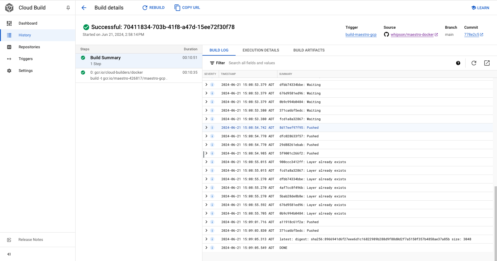
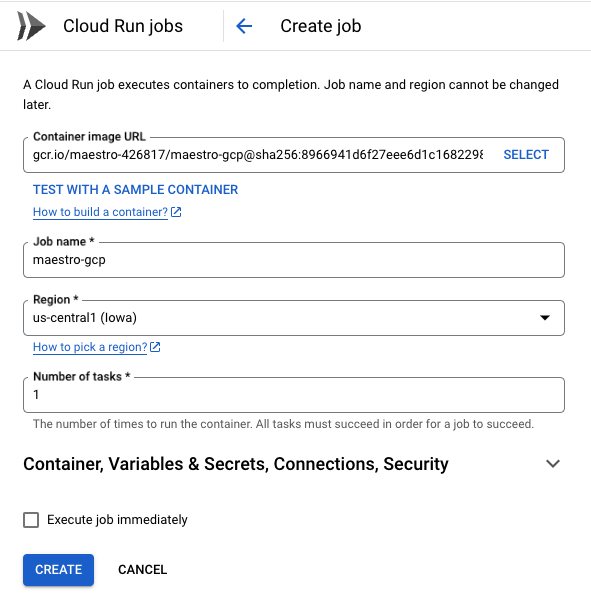
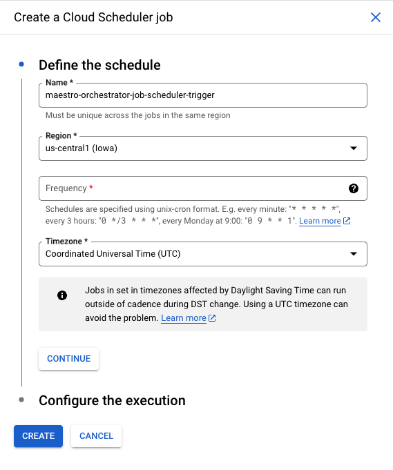
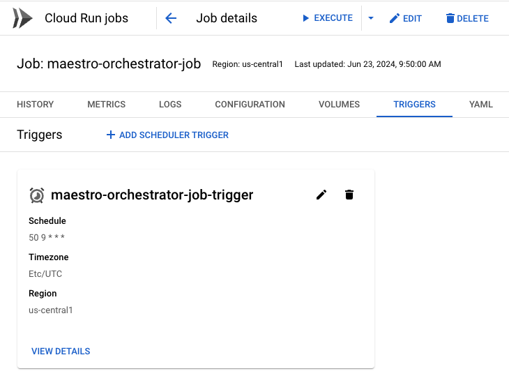
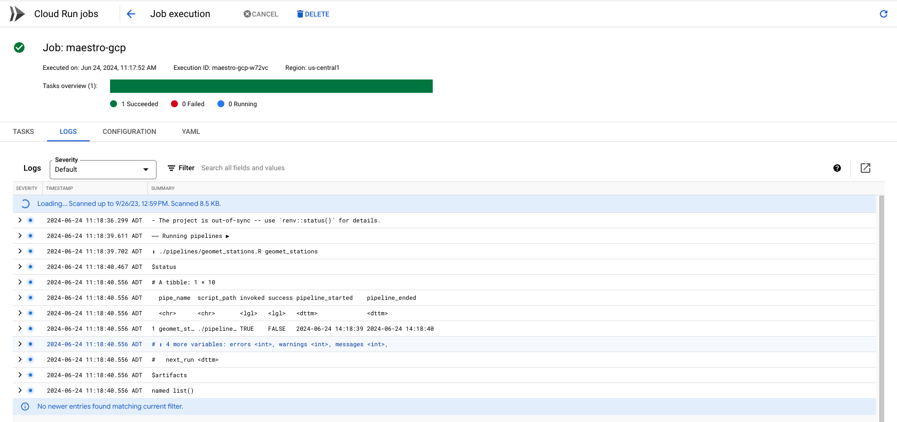

docker build -t maestro_gcp .
docker run maestro_gcp --rm
In the previous post we saw how maestro helps orchestrate data pipelines in a single R project. For maestro to be useful you need to deploy it somewhere and these days that ‘somewhere’ is often cloud-based. Here we’ll walk through deploying a maestro project in the cloud on Google Cloud Platform (GCP).1
This post assumes some familiarity with the maestro package although the practice of deploying on GCP can be generalized to almost any project. The previous blog post walks through maestro specifically.
This project is available on Github here.
Design
Like any cloud offering, GCP gives us many different ways to solve the same problem.2 My suggested design is by no means the only way nor is it necessarily the best way. I strove for simplicity. In the end, I landed on 3 GCP services needed to deploy the project:
- Cloud Build for hosting the containerized project.
- Cloud Run Jobs for executing the container.
- Cloud Scheduler for scheduling the container to run.
The most complicated of these is the first step and requires some familiarity with Docker (and ideally Github).
Dockerizing Maestro
The best way to ensure that our maestro project runs in the cloud with all its dependencies is to use Docker. Docker is widespread in software development these days and is practically a requirement for deploying anything. I won’t go over the fundamentals of Docker here (Alex Gold’s DevOps for Data Science has a Demystifying Docker chapter that is very helpful if you’re new or rusty with Docker).
We need to create a Dockerfile at the root level of the project. I used dockerfiler for this. It has a function dock_from_renv() and it got me about 90% of the way there. As implied in the name you need to be using renv.3
After using dockerfiler to generate the Dockerfile, I made some necessary tweaks. The main thing is to add a few system libraries and to add the ENTRYPOINT ["Rscript", "orchestrator.R"] so that Google Cloud Run knows to execute that script:
# Dockerfile
FROM rocker/r-ver
RUN apt-get update && apt-get install -y \
libxml2-dev \
libcurl4-openssl-dev \
libssl-dev \
libsodium-dev \
zlib1g-dev \
pkg-config \
&& rm -rf /var/lib/apt/lists/*
RUN R -e 'install.packages("remotes")'
RUN R -e 'remotes::install_version("renv", version = "1.0.7")'
WORKDIR /usr/src/app
COPY . .
RUN R -e 'renv::restore()'
ENTRYPOINT ["Rscript", "orchestrator.R"]I also had to add some system libraries (libcurl4-openssl-dev for making the API requests). This part is a bit tedious and will depend on your situation. For instance, if you’re doing anything geospatial you may need lib-gdal. ChatGPT was pretty helpful when I ran into errors building my docker image.
This leads us to the next step: building the image and testing it in a container locally. This is where you can debug problems before you go to deploy to GCP.
Creating a cloudbuild.yaml
The cloudbuild.yaml is a configuration file for telling GCP what image to use and how to build it. Think of it as the link connecting your project to the place where the docker image will live in GCP. Full confession: ChatGPT helped me with this one:
steps:
- name: 'gcr.io/cloud-builders/docker'
args: ['build', '-t', 'gcr.io/$PROJECT_ID/maestro-gcp', '.']
images:
- 'gcr.io/$PROJECT_ID/maestro-gcp'
options:
logging: CLOUD_LOGGING_ONLYName this file cloudbuild.yaml and add it to the root level of your project. At this point, you should have a project structure that looks something like this:
.
├── Dockerfile
├── cloudbuild.yaml
├── maestro-gcp-deploy.Rproj
├── orchestrator.R
├── pipelines
├── renv
└── renv.lockHosting the Container on GCP
The great thing about Cloud Build is you can host a project with a Dockerfile on Github and deploy it to GCP from there.
Create the Github repo and push the project code there. Then, in the GCP console and, inside of Cloud Build > Triggers, select Connect Repository.
Once you open the Connect Repository wizard and select Github, it’ll step you through some authentication.

Create Cloud Job Run
If your build was successful, congrats! You made it through the hardest part. We now go to Cloud Run Jobs.4 Go to Create Job and browse through to find your recently build container.

You may also want to select the box to ‘Execute job immediately’ to test that the container runs as expected.
Schedule It
We can stay right within the Cloud Run service to do the scheduling even though it is handled by Google Cloud Scheduler.
Click on your newly created job and then on Triggers > Add Scheduler Trigger:

The Frequency input uses cron syntax. You can use Crontab to help specify the schedule. When it’s created you should see something below like this:

I like to trigger the job manually too to see how it runs, or you can just wait until the schedule kicks in.

Final Remarks
And that about sums it up for the deployment. Cloud deployment is almost never a straightforward process, so be prepared for some failed attempts. I relied on ChatGPT when I ran into problems. My organization gives us access to ChatGPT 4o and it seems to have an excellent grasp of GCP. It tends to provide command line instructions rather than point-click in the GCP console, but this is for your benefit - it’s more reproducible and stable.
Footnotes
Why GCP and not AWS or Azure? We chose GCP for this initial post on deployment for two reasons. First is it has always free tiers for commonly used services. For lightweight use cases, you won’t have to worry about incurring a cloud bill. Another reason is I’ve found the learning curve for GCP much gentler compared to AWS and Azure. In general, GCP is much better at helping you do what you need to do at very little to no cost (for lightweight jobs).↩︎
Cloud providers are great at packaging the same fundamental activity in a million different ways. Try not to get overwhelmed with all the different services in GCP. Usually you’ll only ever make use of a few of the most common ones. Everything comes down to compute and storage.↩︎
Yes, I realize this may feel like a lot before we’ve even made it to GCP. While Docker and renv create additional work (and often frustration) up front, it truly is more beneficial when it comes to the actual deployment. Without Docker, setting up the runtime is an especially painful game of whack-a-mole. This doesn’t mean you won’t have to whack a few moles first though.↩︎
Make sure you choose Create Job and not Create Service. Services listen for HTTP requests whereas jobs can be triggered by a cron schedule.↩︎